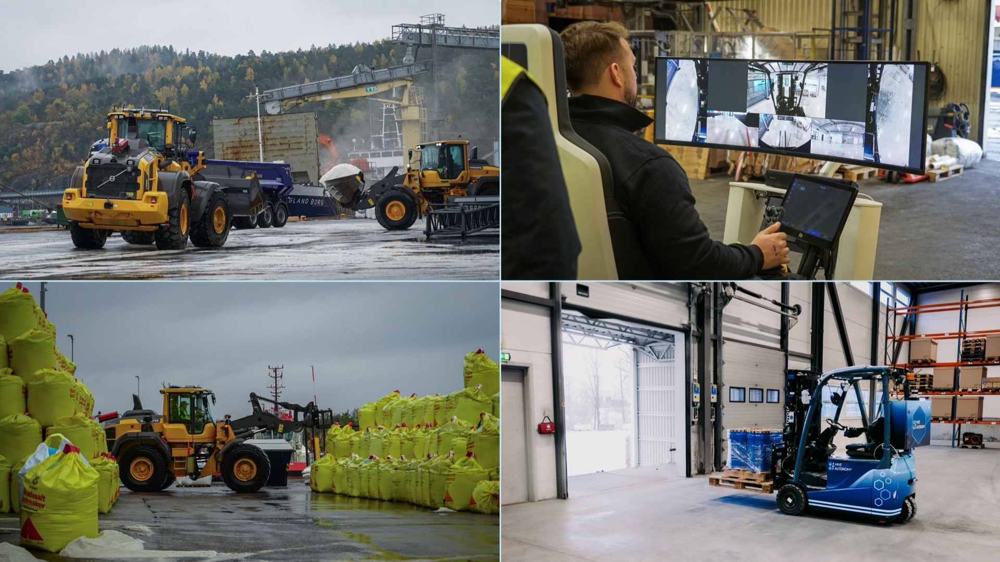
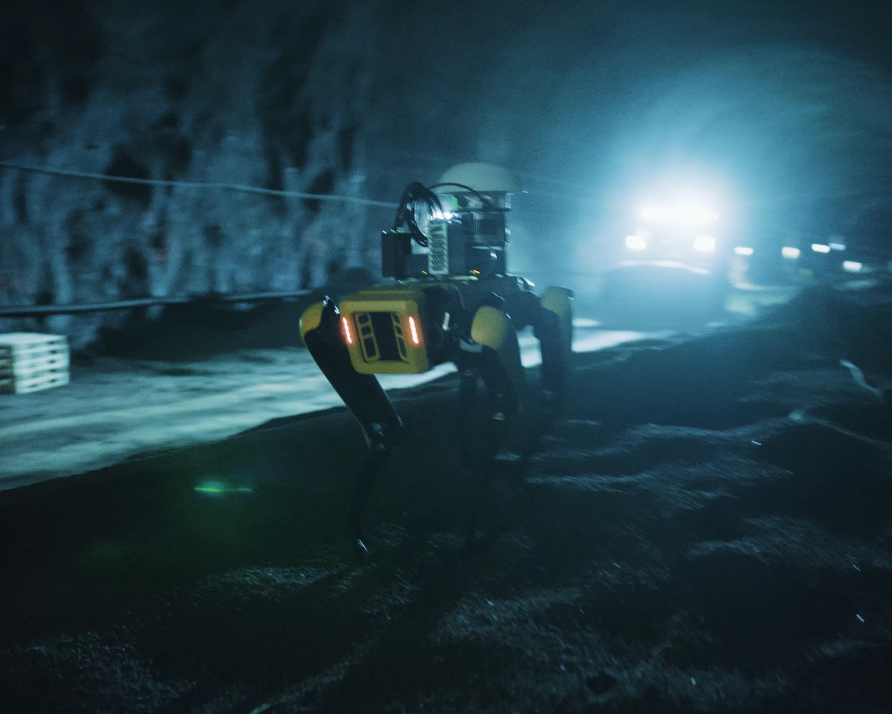
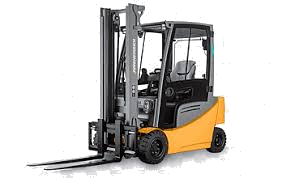
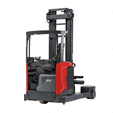

Built by the same team that has delivered safety critical Industrial equipment to Equinor, Siemens, and North Sea operators for over a decade — now deploying supervised autonomous machinery in the harshest real-world industrial environments. Including truck loading and unloading operations.
On Norway's Rv. 13 Vikafjellet mountain pass — one of Europe's most demanding winter roads — a Hive-equipped wheel loader clears avalanche debris before a geologist can reach the site.
No cab. No driver. No risk to personnel. This is not a lab result. It is a live operation run under Norwegian Public Roads Administration supervision, in conditions that would shut down any prepared-site autonomy platform.
Vi tek stadig i bruk ny teknologi i vinterdrifta. På rv. 13 Vikafjellet testar vi resten av denne vintersesongen noko heilt nytt: Automatisk vinterdrift.
Mellom Voss og Sognefjorden i Vestland, har skredtårn allereie bidratt til auka oppetid. No ønskjer vi å ta dette enda eit skritt vidare, med ein spesialbygd hjullastar berekna for førarlaus bruk.
Med det førarlause køyretøyet kan vi gå inn og rydda bort skred før geolog kjem, og på den måten spara mykje tid og gi meir oppetid.
Dette prosjektet støttar opp under fleire av våre toppmål, vi tek i bruk ny teknologi for å gje eit endå betre tilbod til trafikantane, vi sikrar meir oppetid og føreseieleg framkomst, og vi sørger for auka trafikksikkerheit for entreprenøren sine folk. Skulle hjullastaren verta teken før store snømengder, er det utelukkande materiell som går tapt, ikkje menneskeliv.
Den førarlause hjullastaren vil kun verta nytta når fjellet er stengt. Det er ikkje lov å bruka han når vegen er open.
We keep adopting new technology in winter operations. On Rv. 13 Vikafjellet, we're testing something brand new for the rest of this winter season: automatic winter maintenance.
Between Voss and Sognefjorden in Vestland, avalanche towers have already helped increase uptime. Now we want to take this one step further, with a specially built wheel loader designed for driverless use.
With the driverless vehicle, we can go in and clear avalanche debris before a geologist arrives, which saves significant time and gives more uptime.
This project supports several of our top goals: we're adopting new technology to offer a better service to road users, we're securing more uptime and predictable mobility, and we're improving traffic safety for contractors' personnel. If the wheel loader is caught in a large avalanche, only equipment is lost — not human lives.
The driverless wheel loader will only be used when the mountain pass is closed. It is not permitted to operate it when the road is open.
Same safety culture. Same operational complexity. Same environment your team manages every day.

Live deployment at one of the world's largest fertilizer and industrial chemicals producers. Closest analogue in environment, safety culture, and operational rigor to ExxonMobil's downstream facilities.

Norway's largest 5G construction project with Veidekke and Telia. Proven operation in live workflows alongside the world's leading robotics platforms.

Full autonomy on counterbalance fleets — loading, unloading, and trailer operations in real industrial yards.

High-bay racking and narrow-aisle operations — autonomous put-away and retrieval at height.
Next-generation labour augmentation — designed for tasks requiring dexterity in unstructured environments.
We collect training data at our cost. You see the capability live — no integration risk, no CAPEX commitment. Example use case: truck loading and unloading at processing facilities.
Our pre-trained autonomy algorithms (vision-language-action models) handle the operation at ~99% task completion. Your fleet, your infrastructure — not ours.
The role is safer and higher skilled while you can derisk from labour shortages, securely grow your operation and measure a predictable throughput.
Three steps to validating autonomous truck loading and unloading at your site — before you commit to anything.
Hive brings a machine to your facility and runs a supervised autonomous truck loading cycle. You evaluate the capability live — no integration, no CAPEX, no commitment.
Option to carry out all the internal reviews and paperwork with the first deployment running under extended proof of concept. No obligation to commit until all the criteria met.
We present the commercial terms. Your team validates performance during the proof of concept. You confirm double-digit efficiency gains before committing to a contract term.